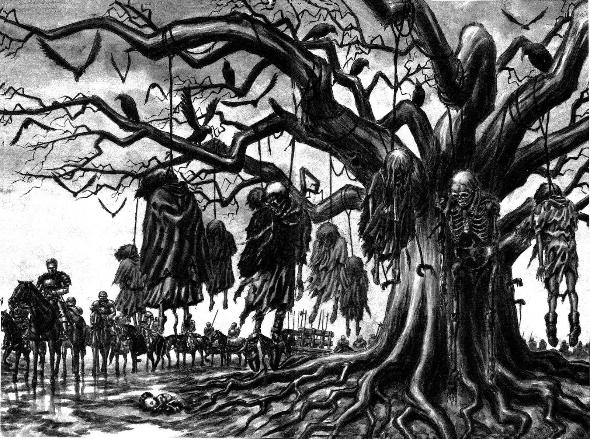

Porque berserk é tao

- Berserk é um mangá criado por Kentaro Miura e ficou muito conhecido dentro do gênero seinen (voltado para o público mais maduro) como uma obra prima do dark fantasy, mesmo estando inacabada. Infelizmente, Miura faleceu em 2021 antes de concluir sua tão aclamada obra.